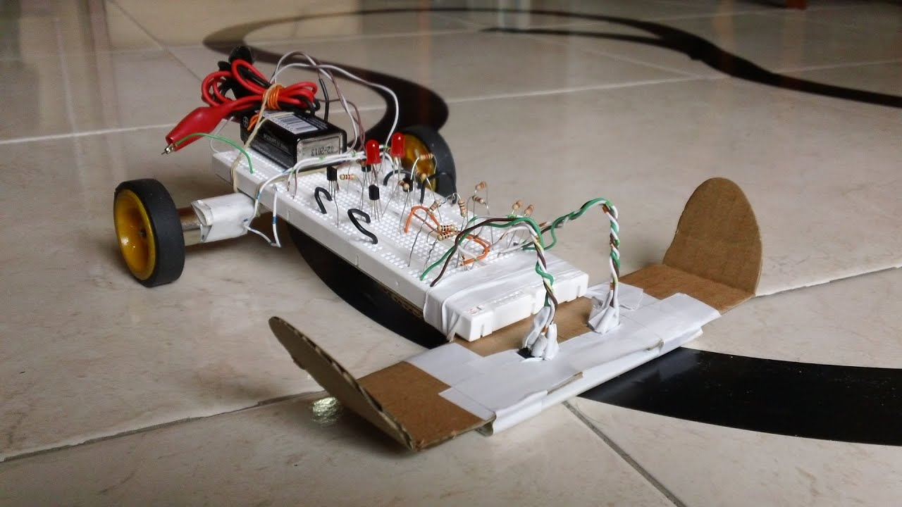
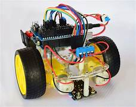
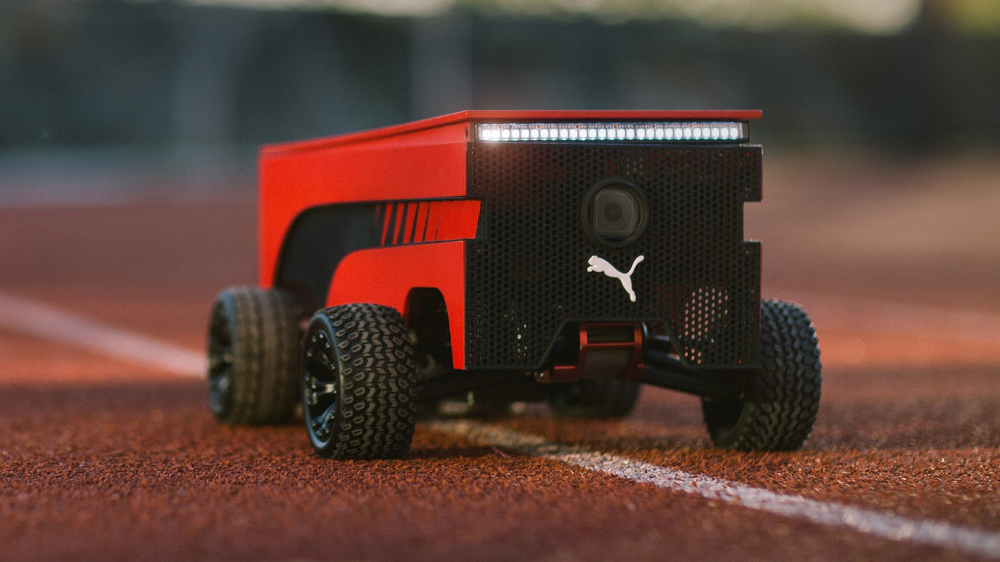

Un robot seguidor de líneas es uno de los proyectos más comunes y didácticos en robótica con Arduino, ideal para aprender sobre sensores, motores y control básico.
Hay distintos modelos o variantes de seguidores de línea, dependiendo de su complejidad, sensores usados y métodos de control. Por ejemplo:


